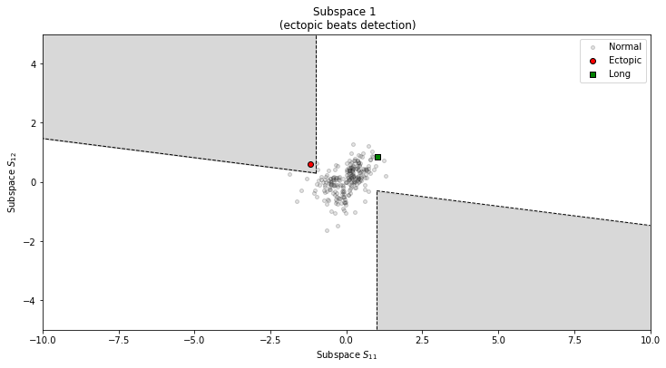

systole.plots.plot_subspaces#
- systole.plots.plot_subspaces(rr: Optional[Union[List[float], numpy.ndarray]] = None, artefacts: Optional[Dict[str, numpy.ndarray]] = None, input_type: str = 'rr_s', figsize: Optional[Union[Tuple[float, float], int]] = None, ax: Optional[Union[Tuple, List]] = None, backend: str = 'matplotlib') Union[bokeh.plotting._figure.figure, matplotlib.axes._axes.Axes][source]#
Visualization of short, long, extra, missed and ectopic beats detection.
The artefact detection is based on the method described in [1].
- Parameters
- rr
numpy.ndarray| None R-R interval time-series, peaks or peaks index vectors. The default expected vector is R-R intervals in milliseconds. Other data format can be provided by specifying the “input_type” (can be “rr_s”, “peaks” or “peaks_idx”).
- artefactsdict | None
A dictionary containing the infos abount the artefacts detected using the
systole.detection.rr_artefacts()function. This parameter is optional, but if provided the data provided in rr will be ignored.- input_typestr
The type of input vector. Default is “peaks” (a boolean vector where 1 represents the occurrence of R waves or systolic peaks). Can also be “rr_s” or “rr_ms” for vectors of RR intervals, or interbeat intervals (IBI), expressed in seconds or milliseconds (respectively).
- figsizetuple | int | None
Figure size. Default is (12, 6) for matplotlib backend, and the height is 600 when using bokeh backend.
- ax
matplotlib.axes.Axes| None Where to draw the plot. Default is None (create a new figure). Otherwise, a tuple of list of Matplotlib axes should be provided. Only applies if backend=”matplotlib”.
- backend: str
Select plotting backend {“matplotlib”, “bokeh”}. Defaults to “matplotlib”.
- rr
- Returns
- plot
matplotlib.axes.Axesorbokeh.plotting.figure.Figure The matplotlib axes, or the boken figure containing the plot.
- plot
See also
plot_events,plot_ectopic,plot_shortlong,plot_subspaces,plot_frequencyplot_timedomain,plot_nonlinear
References
- 1
Lipponen, J. A., & Tarvainen, M. P. (2019). A robust algorithm for heart rate variability time series artefact correction using novel beat classification. Journal of Medical Engineering & Technology, 43(3), 173–181. https://doi.org/10.1080/03091902.2019.1640306
Examples
Visualizing artefacts from RR time series.
from systole import import_rr from systole.plots import plot_subspaces import matplotlib.pyplot as plt # Import PPG recording as numpy array rr = import_rr().rr.to_numpy() _, axs = plt.subplots(ncols=2, figsize=(12, 6)) plot_subspaces(rr, ax=axs)
(<Axes: title={'center': 'Subspace 1 \n (ectopic beats detection)'}, xlabel='Subspace $S_{11}$', ylabel='Subspace $S_{12}$'>, <Axes: title={'center': 'Subspace 2 \n (long and short beats detection)'}, xlabel='Subspace $S_{21}$', ylabel='Subspace $S_{22}$'>)Visualizing artefacts from the artefact dictionary.
from systole.detection import rr_artefacts # Use the rr_artefacts function to short/long and extra/missed intervals artefacts = rr_artefacts(rr) _, axs = plt.subplots(ncols=2, figsize=(12, 6)) plot_subspaces(artefacts=artefacts, ax=axs)
(<Axes: title={'center': 'Subspace 1 \n (ectopic beats detection)'}, xlabel='Subspace $S_{11}$', ylabel='Subspace $S_{12}$'>, <Axes: title={'center': 'Subspace 2 \n (long and short beats detection)'}, xlabel='Subspace $S_{21}$', ylabel='Subspace $S_{22}$'>)
Using Bokeh as plotting backend.